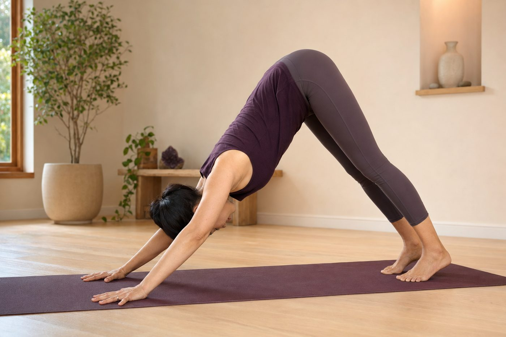

媽媽手、滑鼠手、網球肘，都是手痛，差在哪？

- 手痛不要全部混為一談：媽媽手是「大拇指根部肌腱發炎」，滑鼠手是「手掌正中神經壓迫麻木」，網球肘是「手肘外側伸肌腱勞損」。
- 滑鼠手最容易在半夜麻醒，若延誤治療恐引發大拇指根部大魚際肌不可逆萎縮。
- 更年期荷爾蒙劇變使肌腱膠原蛋白水分流失，加劇 40 至 55 歲女性腱鞘發炎機率。
- 末端手痛的真正元凶往往在「上游圓肩駝背」；透過壁繩瑜伽重新找回肩胛骨與大肌群承重，才能徹底切斷手部代償性勞損。
抱孫子抱到手腕大拇指一動就刺痛、用電腦握滑鼠握到手指發麻半夜被麻醒、轉個門把或擰條毛巾手肘外側痛到幾乎握不住把手——在現代生活與家庭勞務中，手部疼痛的發生率極高。許多人常籠統地說「我好像得了滑鼠手」或是「我是不是媽媽手」，買了各種護腕、貼滿痠痛貼布，卻發現手痛依舊反覆發作。要真正解決問題，第一步必須從神經解剖學精確分辨：你的手痛到底源於哪條肌腱、哪條神經，以及上游的肩膀體態到底發生了什麼事。
解剖三稜鏡：三相手部痛點病理大解碼
| 比較項目 | 媽媽手（狄奎凡氏症） | 滑鼠手（腕隧道症候群） | 網球肘（肱骨外上髁炎） |
|---|---|---|---|
| 醫學正式名稱 | 狹窄性肌腱滑膜炎（De Quervain's） | 腕隧道症候群（Carpal Tunnel） | 肱骨外上髁肌腱病變（Lateral Epicondylitis） |
| 核心受損構造 | 外展拇長肌（APL）與伸拇短肌（EPB）之第一隔間腱鞘 | 手腕掌側骨纖維管內之正中神經（Median Nerve） | 橈側伸腕短肌（ECRB）在肱骨外上髁之肌腱附著點 |
| 最典型痛感部位 | 手腕橈側（大拇指根部凸起骨頭處） | 手掌、大拇指、食指、中指及無名指橈側半邊麻木刺痛 | 手肘關節外側骨頭突起處向小臂延伸痠痛 |
| 典型誘發動作 | 大拇指反覆外展張開、單手抓重物、擰毛巾 | 手腕長時間壓迫在桌面上、反覆背屈滑動滑鼠 | 手腕反覆用力上翹抓握、拿重鍋、轉門把、提重物 |
| 高危險警訊 | 局部劇烈腫脹、握拳下壓手腕劇痛 | 半夜麻醒甩手、大拇指根部魚際肌萎縮 | 握力急遽下降、手肘無法完全伸直受限 |
1. 媽媽手：不只是媽媽，單手滑大螢幕手機也會中招！
媽媽手的醫學學名為「狄奎凡氏症（De Quervain's Disease）」。解剖學上，控制大拇指外展與伸展的兩條重要肌腱——外展拇長肌（APL）與伸拇短肌（EPB），在通過手腕背側第一伸肌隔間時，被厚厚的纖維腱鞘所包裹。
當手腕長時間呈現「尺偏（手腕往小指方向側彎）」並反覆使用大拇指用力時（例如單手虎口托抱嬰兒、廚師單手端平底鍋、或是現代人單手拿著超大螢幕智慧型手機狂刷短影音），肌腱與腱鞘之間產生劇烈機械摩擦，導致腱鞘水腫肥厚，管道空間狹窄，形成一動就劇痛的惡性循環。
簡易居家自我檢測（芬可斯坦測試 Finkelstein's Test）：將大拇指包在其他四指之內握拳，接著將整個手腕向小指方向慢慢向下彎折。若手腕橈側大拇指根部立刻引發劇烈拉扯尖銳劇痛，即為高度懷疑陽性反應。
2. 滑鼠手：神經受夾擠的「半夜麻醒」警報
滑鼠手是典型的「神經卡壓症候群（Nerve Entrapment）」。在我們的手腕掌側，有一條由腕骨與橫腕韌帶（屈肌支持帶）構成的封閉狹窄骨性隧道——腕隧道（Carpal Tunnel）。這個小小的隧道內，擠著多達 9 條屈指肌腱以及一條極度重要、主管大半手掌感覺與大拇指肌肉的「正中神經」。
當我們打字或使用滑鼠時手腕習慣懸空、過度向上後折（背屈），或是前臂長時間壓迫在硬質桌緣時，隧道內的壓力會劇增數倍，直接夾擠缺血的神經纖維。典型症狀是在大拇指、食指、中指以及無名指的外半側出現密密麻麻的「針扎感、觸電感與發麻」，許多患者常在清晨被麻醒。若拖延不就醫，神經支配受損，大拇指掌側隆起的大魚際肌會慢慢萎縮凹陷，失去抓握筷子或鑰匙的精細力量。
3. 網球肘：打字族、家事族的隱形肌腱微撕裂
網球肘的正式學名是「肱骨外上髁肌腱病變」。它根本不是網球選手的專利，臨床上超過 90% 的患者這輩子從沒打過網球！它的力學受力點在手肘外側骨突處，那是前臂伸肌群（尤其是橈側伸腕短肌 ECRB）的總附著錨點。
這條肌肉負責把手腕向上背屈翹起。想像一下：上班族整天抓握滑鼠，手指懸空準備隨時點擊右鍵；家庭主婦提著沉重的購物袋、用力擰乾毛巾、用力拖地擦玻璃。每一次手腕往上翹與強力抓握，前臂伸肌腱就像一根被緊繃的琴弦，在手肘骨突處反覆牽扯拉扯，最終造成肌腱附著點膠原纖維微撕裂與慢性退化退變。
荷爾蒙真相：為什麼 40 至 55 歲女性是三大痛點的高危險群？
臨床統計發現，40 至 55 歲的中年女性罹患手部痛點的比例遠高於同齡男性。這除了日常承擔繁重家務與職場文書雙重負擔外，更深層的生理真相在於「荷爾蒙劇變」：
在產後與更年期前後，體內雌激素（Estrogen）濃度大幅滑落。雌激素原本是維持人體結締組織膠原蛋白彈性、保水度與腱鞘滑液分泌的重要推手；當雌激素下降時，全身肌腱韌帶容易變得脫水、脆弱且延展彈性驟降，使得同樣強度的日常動作，在此年齡段特別容易引發急性腱鞘腫脹與微創傷修復延遲。
上游動力鏈真相：手腕與手肘只是替「圓肩駝背」背黑鍋
很多人不斷更換護腕、打針吃止痛藥，為什麼手痛依然斷不了根？因為手部永遠只是動力鏈的末端受害者！
人體的上肢力學設計非常巧妙：提重物與維持手臂活動時，應主要由軀幹大肌群（前鋸肌、菱形肌、背闊肌）提供堅固的肩胛骨地基支撐，前臂與手腕僅負責微調方向。然而，現代人普遍存在「上交叉症候群」——胸椎駝背、肩膀向前向內旋轉塌陷。當肩胛骨向前傾倒失去背部懸掛支持時，整條手臂像失去吊車底座的吊臂，所有提拿、握滑鼠、搬重物的重量，全部直接下砸到手肘與手腕關節上！

壁繩瑜伽在手部減壓中的協同角色
體態調整絕非醫療治療手部發炎的手段，它的核心使命是「拔除讓末端肌肉反覆代償崩潰的上游病因」：
- 透過壁繩釋放胸小肌與胸鎖乳突肌：利用繩帶懸掛重力，溫柔延展長期縮短的胸大肌與胸小肌，讓向前翻倒的肩關節骨頭自然回正至脊椎中立位。
- 活化肩胛下斜方肌與前鋸肌：重新喚醒沉睡的上背大肌群，建立「由核心背部發力帶動手臂」的全新動作神經路徑，徹底解放前臂橈側伸腕肌群與手腕屈肌群的過度代償負擔。
必須立即就醫的神經骨科紅旗警訊
如果手部與手肘不適伴隨下列任何一項徵兆，請立即尋求骨科或神經內外科專科門診介入，切勿耽誤治療黃金期：
- 肌肉萎縮無力：大拇指根部隆起肌肉（大魚際肌）明顯變平凹陷，手指無法用力捏合，拿杯子、手機無預警滑落。
- 感染蜂窩組織炎警訊：手腕、手背或關節處出現急速擴散的紅、腫、熱、跳動劇痛，或伴隨發燒。
- 頸椎神經根壓迫牽涉痛：手部麻木刺痛並非局限於手腕，而是像電流一樣沿著上臂、肩膀一路串連到頸部，且伴隨脖子轉動時痛感加劇。
找出讓手腕手肘反覆代償的體態源頭
手痛反覆發作，可能是肩膀前傾與圓肩在暗中搞鬼。預約現場 AI 體態檢測，透過全身力線分析看清代償傳導，由老師當面提供專業動作調整建議。
預約首次 NT$299 AI 體態檢測本文為手部解剖學與上肢動力鏈力學衛教知識分享，並非醫療行為，亦不提供任何醫療診斷或療效承諾。若有手指持續麻木、肌肉萎縮無力、局部紅腫發熱或疼痛劇烈惡化，請務必諮詢骨科、神經內科或物理治療專科醫師。
常見問題
如何一秒初步分辨自己是「媽媽手」、「滑鼠手」還是「網球肘」？
觀察發作部位與動作誘因：媽媽手痛在「手腕大拇指根部骨突處」，大拇指張開或抓握平底鍋時劇痛；滑鼠手（腕隧道症候群）主要在「手掌、大拇指、食指與中指麻木刺痛」，半夜或清晨常麻醒；網球肘則痛在「手肘外側骨突處」，拿水杯、擰毛巾或轉門把時肘外側有拉扯撕裂感。
滑鼠手（腕隧道症候群）為什麼常在半夜把人麻醒？甩甩手就會好嗎？
睡眠時因身體副交感神經運作、體液重新分佈，手腕容易下意識微彎屈曲，使原本狹窄的腕隧道內部壓力飆升數倍，直接夾擠正中神經導致劇烈刺痛發麻。甩甩手雖然能暫時促進末梢血流、減輕腫脹，但若神經長期受壓未解，日後恐引發不可逆的大魚際肌萎縮，切莫只依賴甩手忽略正規醫學檢查。
從來不打網球，為什麼也會罹患「網球肘」？日常最常見的地雷動作是什麼？
網球肘醫學名稱為肱骨外上髁炎，是橈側伸腕短肌的微創傷累積。打網球的反手拍只是經典範例，日常生活中「反覆手腕背屈向上翹」的動作才是主因，例如抓著滑鼠反覆翹起手腕敲點擊鍵、手腕懸空打字、手腕用力擰抹布、拿重平底鍋翻炒、甚至抱小孩單手托舉，都會對手肘外側肌腱造成持續剪切張力。
為什麼一直戴護腕、按摩痛點，過沒幾天手痛依然反覆發作？
因為手腕與手肘只是整個上肢動力鏈的末端「代罪羔羊」。如果日常存在嚴重圓肩駝背、肩胛骨失穩下垂，手臂失去上背大肌群（前鋸肌、菱形肌）的承重支持，原本該由軀幹分散的負載就會全部下砸到細小的手腕與前臂肌群上。只戴護腕或揉捏痛點不改變上游肩背動力鏈，自然容易反覆復發。
手部與手肘疼痛出現哪些警訊時，必須立刻前往神經專科或骨科就醫？
若大拇指下方的手掌大魚際肌出現肉眼可見的扁平凹陷萎縮；手指握力大幅喪失（如抓不住鑰匙或杯子無預警滑落）；手部局部伴隨發紅滾燙與劇烈腫脹跳痛（感染化膿警訊）；或麻痛沿著整條手臂向上蔓延至脖子（需鑑別頸椎神經根壓迫），請務必優先掛號神經內科或骨科專科門診。